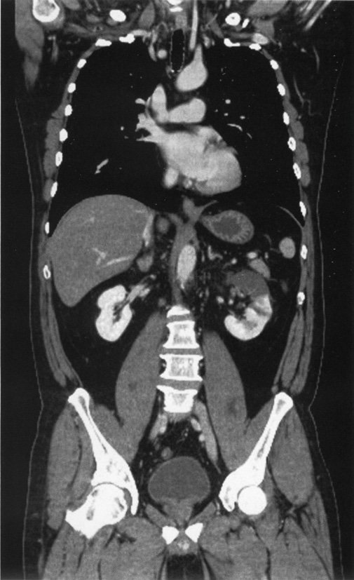
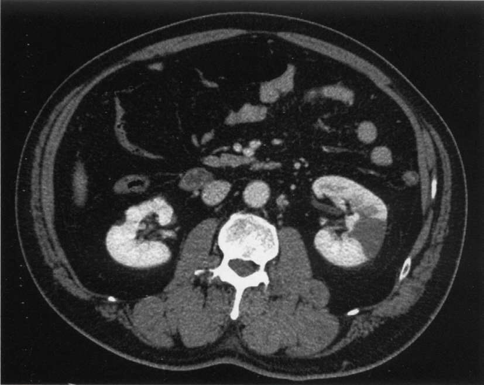
| 選択肢 | 正誤 | 解説 |
| ａ 初期から赤血球円柱出現 | ✗ 誤り | 赤血球円柱は糸球体腎炎の所見。腎硬化症は血尿少ない |
| ｂ ネフローゼ症候群を呈する | ✗ 誤り | 腎硬化症は微量〜少量蛋白尿（ネフローゼには至らない） |
| ｃ 140/90以下の降圧は推奨されない | ✗ 誤り | 目標BP：130/80以下（より厳格な降圧が推奨） |
| ｄ RAS抑制薬は禁忌 | ✗ 誤り | RAS抑制薬（ACE-I/ARB）が推奨される降圧薬 |
| ｅ 透析導入原因として増加傾向 | ○ 正しい | 日本の透析導入原因：DM腎症1位・慢性糸球体腎炎2位・腎硬化症3位（増加中） |
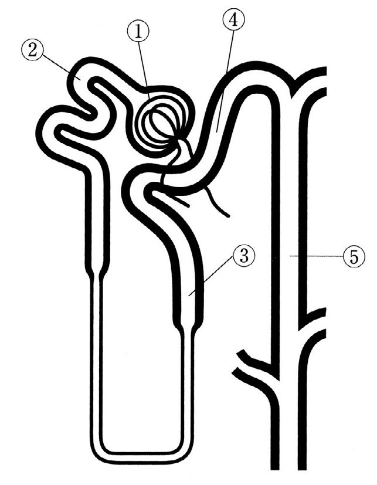
| 部位 | 輸送体/機能 | 障害疾患 | 正誤 |
| ① 糸球体 | 濾過 | ネフローゼ症候群等 | — |
| ② 近位尿細管 | 複数輸送体（Na・Cl・HCO3・G・AA・P・UA） | Fanconi症候群 | ｅは誤り（⑤≠Fanconi） |
| ③ ヘンレループ上行脚（太） | NKCC2（Na-K-2Cl輸送体） | Bartter症候群 | ✓ ｃが正解 |
| ④ 遠位曲尿細管 | NCC（Na-Cl輸送体） | Gitelman症候群 | ｂは誤り（②≠Gitelman） |
| ⑤ 集合管 | AQP2・V2受容体・ENaC・H+ポンプ | 腎性尿崩症・RTA type 1 | ａは誤り（①≠腎性尿崩症） |
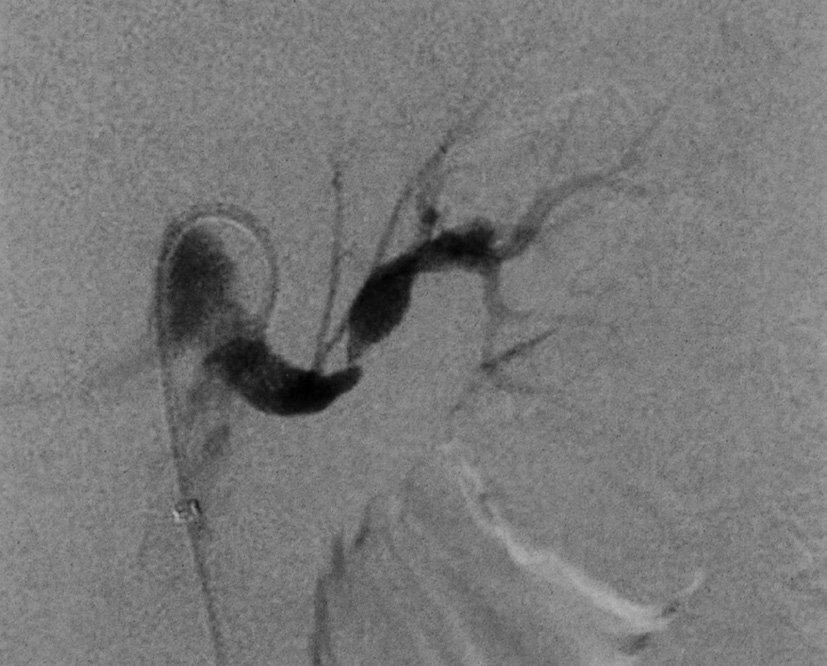
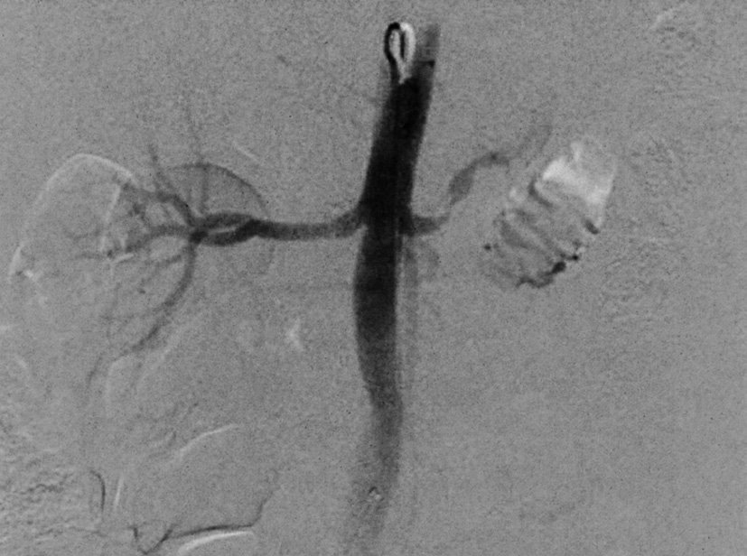
| 疾患 | 酸塩基 | K | 機序 |
| 神経性食思不振症 | アルカローシス | 低K | 嘔吐→HCl喪失 |
| 原発性アルドステロン症 | アルカローシス | 低K | アルドステロン↑→K排泄↑・H+排泄↑ |
| Bartter症候群 | アルカローシス | 低K | NKCC2障害→二次性アルドステロン↑ |
| Addison病 | アシドーシス | 高K | アルドステロン欠乏→K貯留 |
| Sjögren症候群 | アシドーシス | 低K | 間質性腎炎→遠位RTA type 1 → 代謝性アシドーシス＋K尿中喪失 |
| 疾患 | 尿酸値 | 機序 |
| サイアザイド系利尿薬 | 高尿酸血症 | 尿酸排泄↓（有機酸との競合） |
| Lesch-Nyhan症候群（HGPRT欠損） | 高尿酸血症 | 尿酸産生↑（プリン代謝障害） |
| 腫瘍崩壊症候群 | 高尿酸血症 | 核酸崩壊→プリン産生↑→尿酸産生↑ |
| Fanconi症候群 | 低尿酸血症（高尿酸でない） | 近位尿細管での尿酸再吸収障害→尿酸排泄↑ |
| 慢性腎不全 | 高尿酸血症 | 尿酸排泄低下（GFR↓） |
| 組合せ | 正誤 | 解説 |
| Fanconi症候群 ― カドミウム | 正しい | カドミウム（イタイイタイ病）→ 近位尿細管障害 → Fanconi |
| 急性間質性腎炎 ― 甘草 | ✗ 誤り | 甘草（グリチルリチン）→ 偽性アルドステロン症（低K + 高血圧）が正しい |
| 急性尿細管壊死 ― アミノグリコシド系 | 正しい | 近位尿細管に直接毒性（S3セグメント） |
| 腎性尿崩症 ― リチウム | 正しい | リチウム → 集合管のAQP2発現↓ → ADH抵抗性尿崩症 |
| 慢性間質性腎炎 ― NSAIDs | 正しい | NSAIDs長期服用（鎮痛薬腎症）→ 慢性間質性腎炎 |
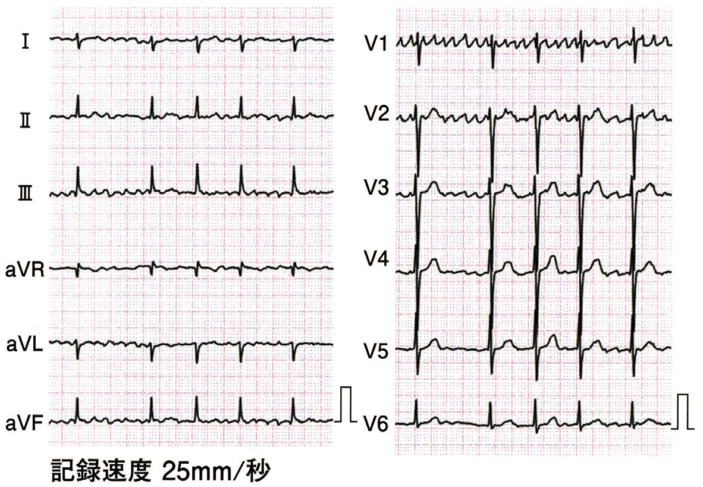
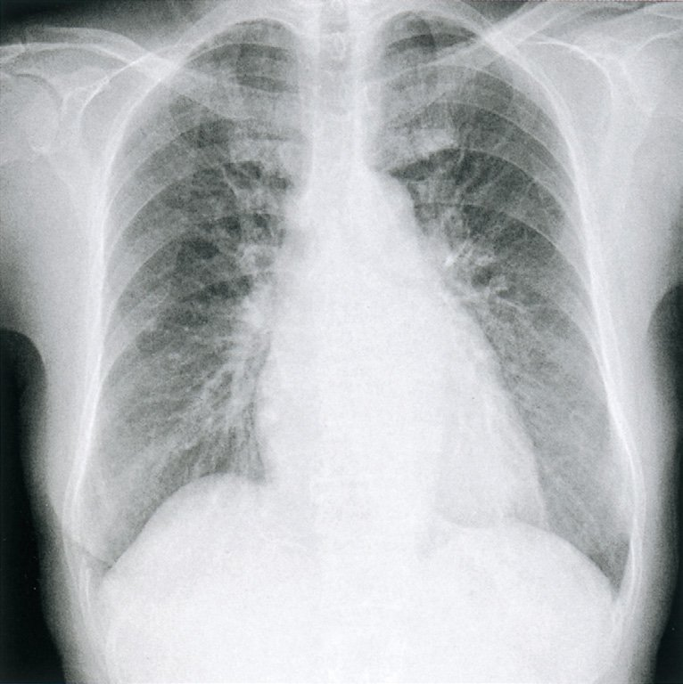
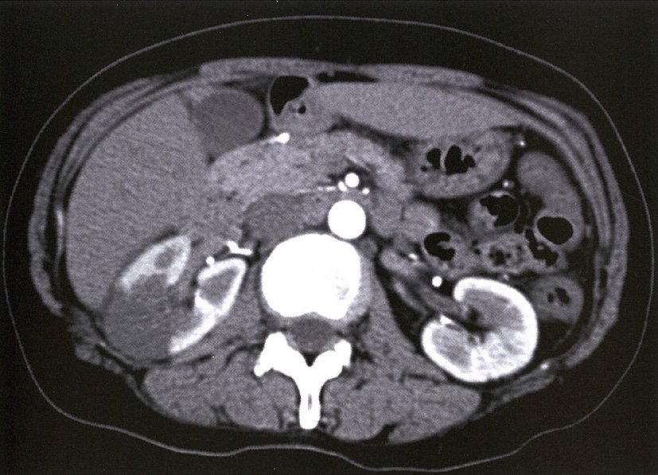
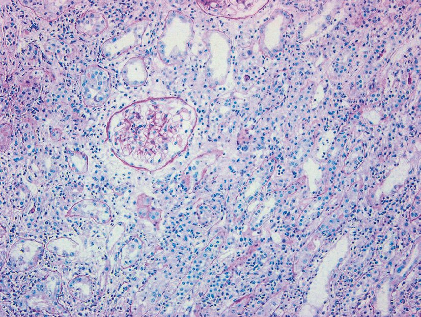
| 選択肢 | 正誤 | 解説 |
| ａ 糖尿（腎性） | あり ○ | グルコース再吸収体（SGLT2）障害→血糖正常でも尿糖 |
| ｂ アミノ酸尿 | あり ○ | アミノ酸輸送体（SLC系）障害→アミノ酸が尿中へ |
| ｃ 高リン血症 | なし ✗ 正解 | Naリン共輸送体（NaPi）障害→リン排泄↑→低リン血症 |
| ｄ 低尿酸血症 | あり ○ | 尿酸再吸収障害→尿酸排泄↑→血清尿酸低下 |
| ｅ 代謝性アシドーシス | あり ○ | HCO₃⁻再吸収障害（NaHCO₃輸送体障害）→ RTA type 2 |
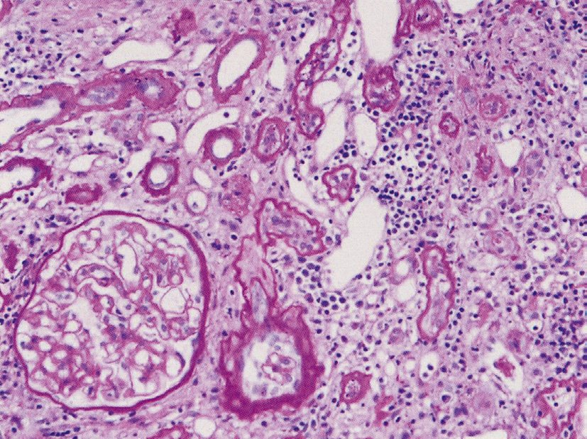
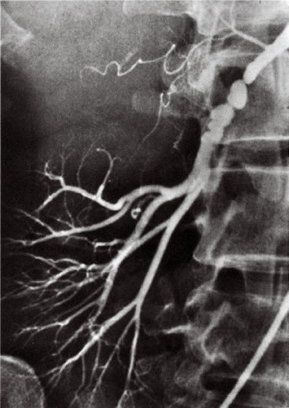
| 選択肢 | 正誤 | 解説 |
| ａ 腎静脈PRA比が診断に有用 | ○ 正しい | 患側/健側 ≥1.5 → 腎動脈狭窄の確定診断 |
| ｂ 高齢者では線維筋性異形成が最多 | ✗ 誤り | 高齢者は粥状硬化が最多。FMDは若年女性 |
| ｃ 全高血圧患者の約30% | ✗ 誤り | 腎血管性高血圧は全高血圧の約1〜5%（少数） |
| ｄ 高カリウム血症を合併 | ✗ 誤り | 腎動脈狭窄→レニン↑→アルドステロン↑→低K血症 |
| ｅ 薬物治療が第1選択 | ✗ 誤り | 若年FMDはPTAが第1選択。粥状硬化型はRAS抑制薬 |
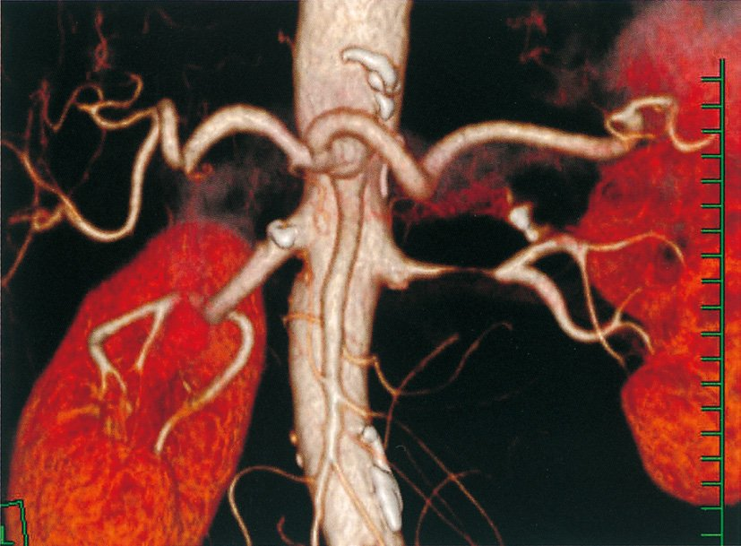
| 疾患 | K値 | 機序 |
| 褐色細胞腫 | 正常〜高K | カテコラミン↑（低Kでない） |
| 糖尿病性腎症（CKD進行） | 高K | GFR↓→K排泄↓ |
| 腎実質性高血圧 | 正常〜高K | 腎実質疾患（AKI/CKD）→K貯留傾向 |
| 腎血管性高血圧 | 低K血症 | 腎動脈狭窄→レニン↑→アルドステロン↑→K排泄↑ |
| 原発性アルドステロン症 | 低K血症 | 副腎からアルドステロン自律分泌↑→K排泄↑ |
| 疾患 | リン | 機序 |
| 腎性糖尿 | 正常 | SGLT2（グルコース輸送体）のみ障害。リン輸送体は正常 |
| 腎性尿崩症 | 正常 | AQP2/V2受容体（水再吸収）障害。リン代謝とは無関係 |
| 副甲状腺機能低下症 | 高リン血症 | PTH↓→リン排泄↓→高リン血症 |
| シスチン尿症 | 正常 | シスチン/塩基性アミノ酸輸送体（SLC7A9）障害のみ |
| Fanconi症候群 | 低リン血症 | NaPiIIb障害→リン再吸収↓→尿中リン↑→低リン血症 |
| 疾患 | 酸塩基 | 機序 |
| Bartter症候群 | 代謝性アルカローシス | NKCC2障害→Cl排泄↑→代償的HCO₃⁻↑ |
| Fanconi症候群 | 代謝性アシドーシス（RTA type 2） | HCO₃⁻再吸収↓（近位尿細管） |
| 尿素サイクル異常症 | 代謝性アルカローシス | NH₃蓄積→肝臓でHCO₃⁻消費↑？（実際はアルカローシス傾向） |
| 原発性アルドステロン症 | 代謝性アルカローシス | アルドステロン↑→H+排泄↑→アルカローシス |
| 家族性低リン血症性くる病 | 正常〜軽度アシドーシス | FGF23↑→リン排泄↑→くる病（アシドーシスは軽度） |
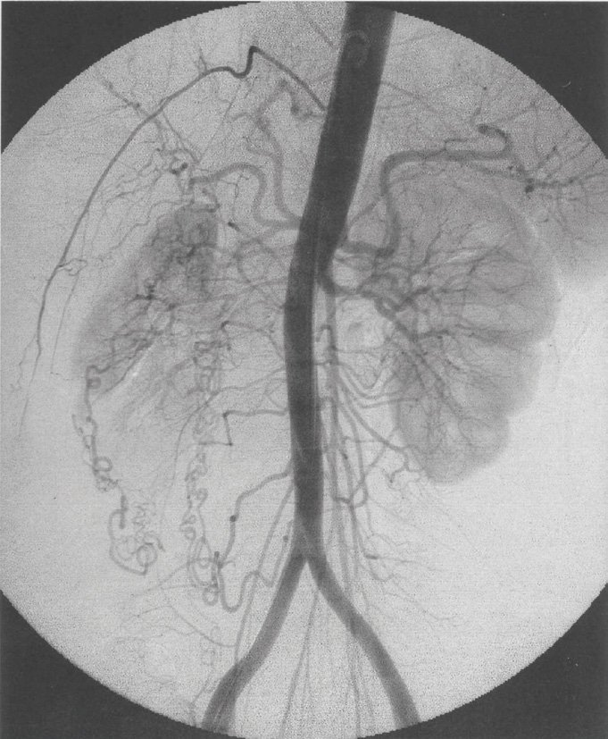
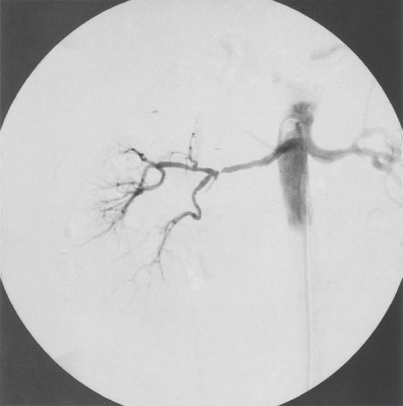